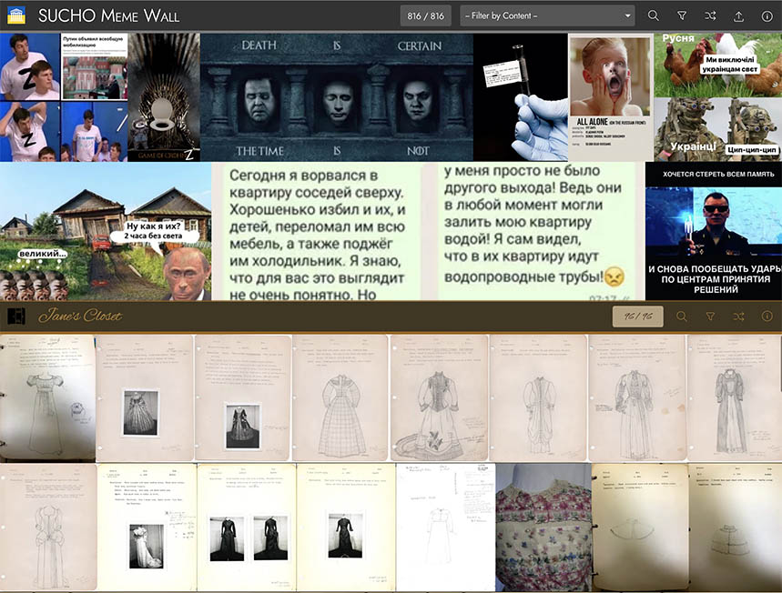

Summer 2022 brought with it some major organizational changes in the library. Nonetheless, the work continues: with SUCHO, getting back to everything else I was doing last winter, and taking on additional responsibilities.
Classes
This academic year, I'm going back to teaching my annual class in the winter, and an independent study in the spring. I'm hoping that having the fall quarter to advertise will help drum up enrollment. It'll be my third time teaching the non-English DH class, and as usual, it'll need reinventing since the last time was asynchronous and online in fall 2020. But I have until January to sort all that out, and I'm hoping it'll be the nudge I need to update things like the multilingual DH resources list that largely fell victim to the pandemic.
Existing Projects
This summer has been big for the Textile Makerspace, where we've started holding events again (thanks, Mary-Ellen Petrich, for the crochet lessons!), even if hybrid maker-events take a little more work to arrange. We've made some friends at the TAPS Costume Shop who helped us reimagine and reorganize our space, especially now that we have some new infrastructure, like an embroidery machine and some looms. We're looking forward to holding regular hours in the fall; keep an eye out for updates on hours and events.
I've been chipping away at Data-Sitters Club book 15 on and off for much of the year, and we published it last week. It's been a fun collaboration with Dainy Bernstein and Mark Algee-Hewitt, looking at the Orthodox Jewish BSC knock-off series BY Times, which has a more complex relationship with mainstream 90's girls books than it initially seems. We also discovered that text classification -- even for things that you'd think would be, like, totally easy like "valley girl" speak -- is actually harder than it sounds. Check out DSC 15: Little Miss California Stereotype... and the BY Times. Another long-term book, Anastasia's Secret Language on software studies, came out today, along with an DSC Index to make the project easier to navigate. DSC 16 gave us the chance to explore the Emulation As A Service Infrastructure (EAASI) developed by the Software Preservation Network, where Stanford is a partner. And we've got a few more books coming up soon, including one on Cadence Cordell's trip to the Ann M. Martin Papers at Smith College, and one on HathiTrust.
Multilingual Harry Potter fanfic hasn't gone anywhere this summer after the DH Unbound conference presentation in the spring, but I still hope we can get an article written up and submitted before the end of the calendar year!
The Global Medieval Sourcebook has mostly been on hold this summer, but it's nearly complete and we're looking forward to a fall launch!
As the summer has ended, I've been helping with wrap-up for Adrian Daub's book on cancel culture as a moral panic in Germany and France, which has included digging into some of the library's news-related data sets (New York Times, Washington Post, various newspapers available through LexisNexis). It's been fun to put some of the text analysis methods we've explored as part of the Data-Sitters Club to work in a faculty research context, and I'm looking forward to taking some of the material that didn't fit in the book and making it available on the book website this fall.
Animal Crossing: New Digital Humanities resumed this summer with a special presentation on SUCHO as part of the DH 2022 Tokyo Commemorative Lecture Series video available here). In August, we were joined by Brandon Walsh and
Greg Weaver from The Hard Modes, who presented their new album and taught us about how they think through reimagining video game music as jazz. I'm looking forward to scheduling more talks for the fall.
Speaking with some grad students about their data needs, it seems like there's some interest in improving access to our collection of scanned Arabic-script manuscripts (including those in Persian and Ottoman Turkish). This has been a useful focus for Transkribus work, as I've been in touch with Kioumars Ghereghlou, the Curator for Middle East Collections, about how we might go about doing that with manuscript images he's collected.
A lot of the early summer was spent trying to sort out various departmental websites that had been built using the Drupal 7 Stanford Sites services, which was being shut down in favor of a new version with limited functionality. There haven't been good alternatives for everything; we're still trying to sort out a ticket queue or something similar to substitute for a site we'd used to handle poster requests. There were also a few kinks in the notification chain for sites created under previous ATSes, where emails inquiring about their disposition went to H&S IT instead of me, leading to some last-minute scrambling. But now Cécile Alduy's Decoding Marine Le Pen's Rhetoric and Marisa Galvez's Performing Trobar are available as static sites.
Continuing the theme of infrastructure shifts, I've begun working on another migration for the Entitled Opinions podcast, from a another custom Drupal 7 site that predates my time at Stanford, to hosted WordPress with a podcasting plugin. My hope is that this should significantly curtail the amount of maintenance required moving forward.
I have not yet succeeded in arranging regular DH-WoGeM activities, nor regular meetings for Multilingual DH, but both are on the list for the fall.
I don't have much yet to show yet on Fatoumata Seck's project on Le Front Culturel Sénégalais, a 1970's Maoist cultural movement, but I'm hoping to get the materials accessioned to the Stanford Digital Repository this fallwith a web presentation to follow.
The French Revolutionary Digital Archive project has returned, both through needing to migrate its website, and through starting to explore the possibility of migrating the French Revolution Analysis System (FRAS) to a modern database and interface, as described by my A Day in the Life of a DLCL ATS blog post.
Wrangling 20 years of DLCL dissertations (with different rules and restrictions for digital access) has taken a back seat to other projects, but I've begun putting together some code for extracting named entities from the dissertations. One challenge I've encountered: all things being equal, I'd like to remove the entities on what were originally the cover sheet, as well as the bibliography, but there's a fair bit of variation in how that data (especially the bibliography) is structured. Also, there are more dissertations in languages other than English than I expected, which throws a wrench into the easiest versions of this plan.
Corpus-building this summer involved some preparation for a new LitLab project looking at color and colonialism, including amassing a corpus of Yiddish books available online via the Yiddish Book Center. I've also been working on building a corpus of Ukrainian literature with Yuliya Ilchuk.
And on top of it all, this summer there has been no shortage of SUCHO work as we transition into phase two and work on sorting out the supply chains for getting digitization equipment to Ukrainian cultural heritage institutions, in addition to curating the web archive data. I've also started work on the Handbook of Emergency Web Archiving, which has been a striking reminder of how much I've learned in the last year, including about insomnia-busting topics like managing finances internationally.
New projects
For once, I haven't had many new projects crop up over the summer -- I've been keeping plenty busy with the ones already on my plate.
In my Research Data Services hat, I've been talking with the folks at the Costume Shop about their amazing early-pandemic project to data-ify their historical clothing collection. That data set and the images associated with it (scanned from the physical binders that have long served as a kind of database) deserve to go somewhere safer than Google Docs for the long term. As an early proof-of-concept for what it might look like to make the data accessible in a visual way, I munged some of the data into a template that my colleague Simon Wiles designed for the SUCHO meme wall, and called it Jane's Closet. As a small side-project, I'll be continuing to work with them on getting the materials accessioned into the Stanford Digital Repository, along with thinking through possible interfaces as an excuse to learn some Django.
I've been talking with Judaica librarian Eitan Kensky about another fun data project: Jewish cookbooks, building on a proof-of-concept from 2015.
Over the summer, I worked with University Archivist Josh Schneider and his summer intern Connor Yankowitz, looking at the history of feminist and gender studies classes at Stanford. In the process, I learned quite a bit about old course bulletins, and how things that you might assume would be universal (like course numbers) are ... not necessarily. We fantasized about what a historical Explore Courses app might look like, and the uncertainty about the data from the last few years (since they stopped printing paper versions) made me nervous. But that's a data problem for another day.
As an extension of our acquisition of the Unicode Archives, Stanford Libraries will be adopting Debbie Anderson's Script Encoding Initiative project, which has been housed at Berkeley, running on software that she can't easily use to edit the website herself. Porting it over to a modern static framework should only take an afternoon or so, and is on my list for the fall.
Another consequence of SUCHO is that it's led me into conversations about the library's strategic plans and infrastructural investments around web archiving. I'm co-organizing a workshop this Wednesday to present Browsertrix Cloud (one of the tools we used to put web archiving in the hands of everyone from children to retirees) as a potential pilot tool for the library, and lead a discussion about people's interest in web archives as research data.
Also on the data front, I've managed to get access for myself and the other ATSes to Stanford's collection of books digitized as part of the Google Books project. There are restrictions on how people can use those scans (namely, they need to do their computation on Stanford-run infrastructure), which has led me to work on drafting a humanist-friendly guide to understanding and using high-performance compute clusters.
Finally, it's not quite a new project, but this summer has marked the start of my term as co-president of ACH (the Association for Computers and the Humanities, the US-based DH professional organization), as well as its representative to the international DH organization ADHO.
Writing
This summer, I wrote a short piece on SUCHO for Text and Image: Essential Problems in Art History, a Ukrainian journal. I was happy to be able to submit something to support this special issue on protecting cultural heritage during the war. There was an interview with a number of SUCHO volunteers that was published as "A Conversation with the Organizers of Saving Ukrainian Cultural Heritage Online (SUCHO)" in the Journal of Library Outreach and Engagement.
Also, "Minimizing Computing Maximizes Labor" was published in a special issue of Digital Humanities Quarterly.
Talks and Events
This summer had a few SUCHO events, including a Coherent Digital ALA Breakfast presentation "The extraordinary story of SUCHO: Saving Ukrainian Cultural Heritage Online", the FCSI 2022 closing keynote "Saving Ukrainian Cultural Heritage Online (SUCHO) and the Future of Archivable Scholarly Communication", and a hybrid (with Sebastian Majstorovic in person) public lecture for the European Summer University in Digital Humanities, "Collaborative Volunteering in the Digital Humanities: Saving Ukrainian Cultural Heritage Online (SUCHO)".
At the all-virtual DH 2022 conference based in Tokyo, I presented a short paper with Nichole Nomura, "Quantifying Representation of Asian Identity in 21st-century Anglophone Fiction", and was on a panel with DLCL grad student Eric Kim, "The (Im)Possibilities of Multilingual DH in Theory and Practice: Translation, Metadata, Pedagogy", where he presented work on pogrom references in Russian and US news magazines that he'd done as part of the DH practicum course last year, and I spoke about multilingual DH pedagogy.
Other Things
This summer, CIDR welcomed a new History ATS, Anne Ladyem McDivitt. It is a joy to have someone in the "history version" of my job, and it's been a fun challenge to expand all the acronyms and explain all the organizational context in the library Zoom meetings. I'm looking forward to working with her in the months and years ahead!